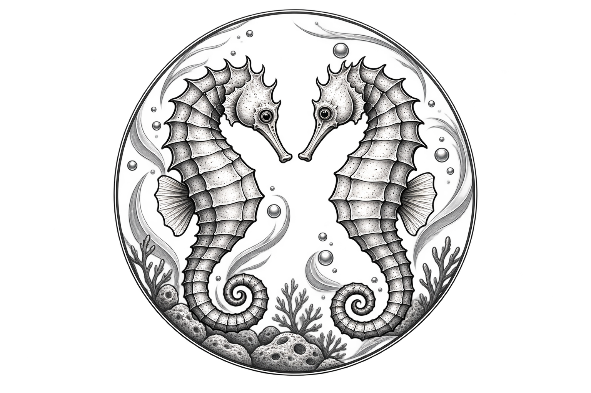

Descargador de Fondos Mutuos CMF
Versión 1.0
Descarga la cartola diaria de fondos mutuos publicada por la CMF Chile, la organiza en una tabla filtrable y la exporta a Excel.
Requisitos: Windows y Google Chrome instalado (la CMF exige
resolver un captcha, así que la app abre un Chrome real para eso).
No necesita instalación ni conexión a internet salvo al descargar datos.